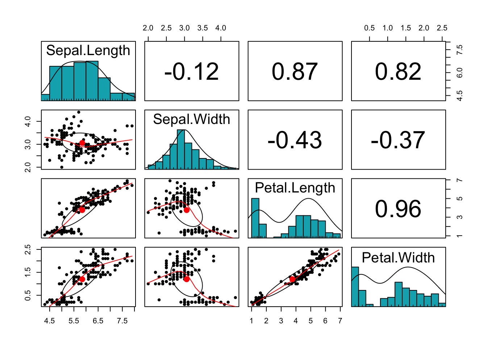
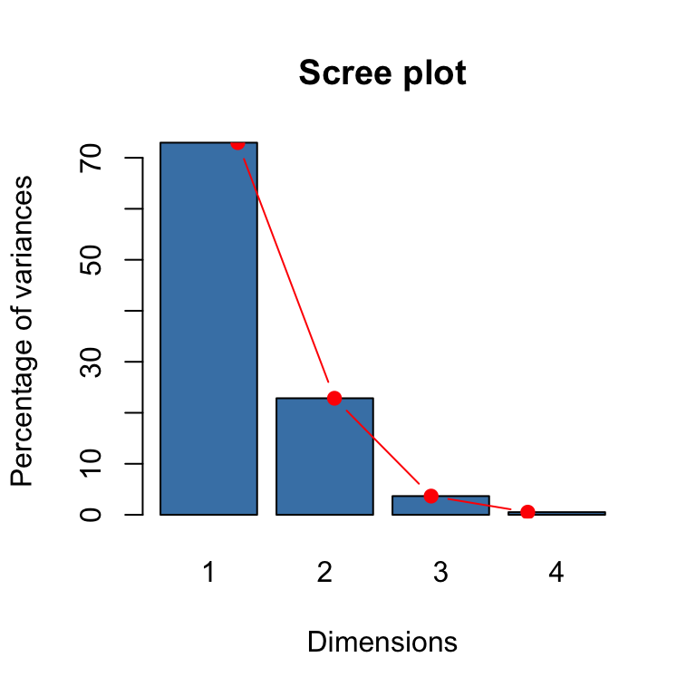
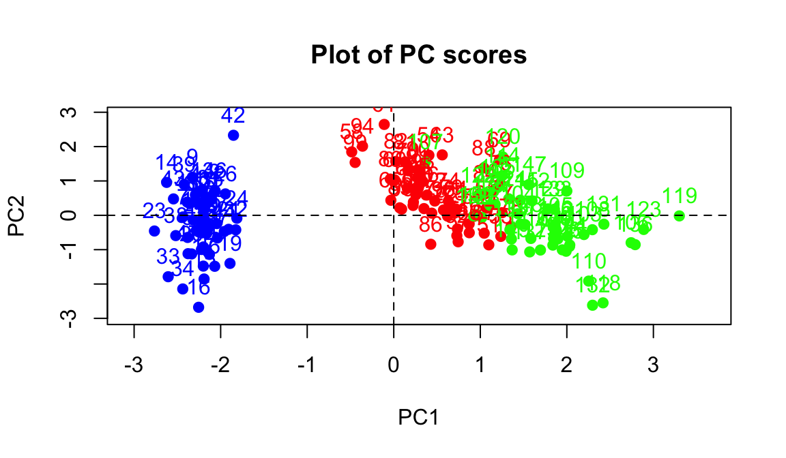
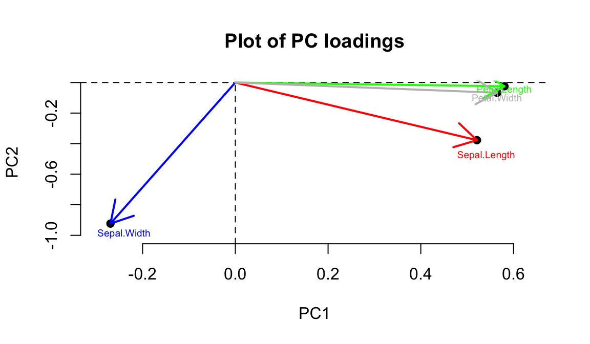
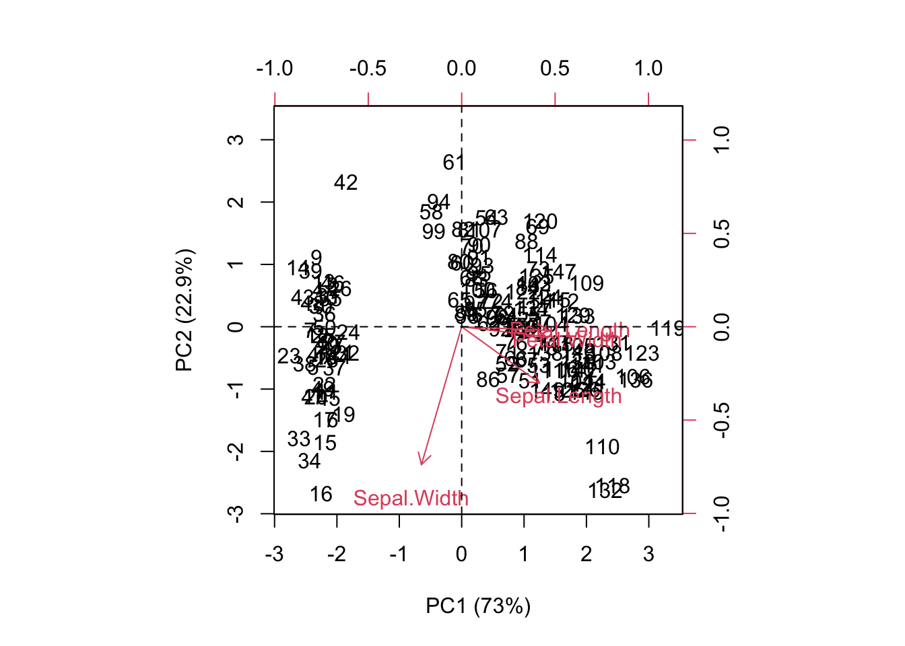

Chapter 2 Workshop: PCA
There are two commands for performing principal component analysis (PCA) in R: princomp() and prcomp() (see details in the lecture note). The main goal of PCA in the tasks today will be dimensionality reduction. We wish to produce a smaller set of uncorrelated variables from the larger set of correlated variables. The resulting variables are uncorrelated and can be used as input to other statistical procedures, e.g. principal component regression (PCR).
2.1 Iris data
Let us consider the popular Iris data set (the data set is on Blackboard in a csv file iris.csv). You can also get the data in R by typing data(iris) in the console. The data consists of 5 variables:
- Species (with three levels: Setosa, Versicolor, Virginica)
- Petal length (in mm)
- Petal width (in mm)
- Sepal length (in mm)
- Sepal width (in mm)
1 This part involves the use of spectral decomposition to obtain principal components and make appropriate plots (this is the method implemented in princomp() function).
[(i)] Read the data into R and print out the first six rows of the data.
Click for solution
head(iris)## Sepal.Length Sepal.Width Petal.Length Petal.Width Species
## 1 5.1 3.5 1.4 0.2 setosa
## 2 4.9 3.0 1.4 0.2 setosa
## 3 4.7 3.2 1.3 0.2 setosa
## 4 4.6 3.1 1.5 0.2 setosa
## 5 5.0 3.6 1.4 0.2 setosa
## 6 5.4 3.9 1.7 0.4 setosaLook at the summary statistics using:
summary(iris[,-5]) # fifth column in the data is removed
What can you say about the variables in the data set? We can plot a scatter plot matrix using pairs.panels function from psych package:
library(psych)
pairs.panels(iris[,-5],
method = "pearson", # correlation method
hist.col = "#00AFBB",
density = TRUE, # show density plots
ellipses = TRUE # show correlation ellipses
)
What can you say about the plot? Do the variables share sufficient information to warrant redundancy?
You can see that the Petal variables are highly correlated (correlation =0.96). They are also highly correlated with the Sepal length variable. This implies that the three variables share redundant information and the use of PCA can remove this redundancy, thereby reducing the dimension of the data.
[(ii)] Do we need to use Covariance matrix (\(\Sigma\)) or Correlation matrix (scale the data)? We can check this by assessing the standard deviation of the variables.
sd <- apply(iris[,-5], 2, sd)
sd## Sepal.Length Sepal.Width Petal.Length Petal.Width
## 0.8280661 0.4358663 1.7652982 0.7622377The variables should be scaled/correlation matrix used.
Spectral decomposition can be obtained using the eigen() function
S <- cor(iris[,-5])
eigdec <- eigen(S)
eigdec## eigen() decomposition
## $values
## [1] 2.91849782 0.91403047 0.14675688 0.02071484
##
## $vectors
## [,1] [,2] [,3] [,4]
## [1,] 0.5210659 -0.37741762 0.7195664 0.2612863
## [2,] -0.2693474 -0.92329566 -0.2443818 -0.1235096
## [3,] 0.5804131 -0.02449161 -0.1421264 -0.8014492
## [4,] 0.5648565 -0.06694199 -0.6342727 0.5235971
The values and vectors from the decomposition are the variances and the principal component loadings respectively.
eig <- eigdec$values
eig## [1] 2.91849782 0.91403047 0.14675688 0.02071484Question: Why is the sum of these eigenvalues 4?
Answer: We have four variables which are now scaled. The variance of each of them is 1. The total variance of all of them is therefore 4.
The eigenvectors can be obtained as
pc_loading <- eigdec$vectors
rownames(pc_loading) <- colnames(iris[,-5])
pc_loading## [,1] [,2] [,3] [,4]
## Sepal.Length 0.5210659 -0.37741762 0.7195664 0.2612863
## Sepal.Width -0.2693474 -0.92329566 -0.2443818 -0.1235096
## Petal.Length 0.5804131 -0.02449161 -0.1421264 -0.8014492
## Petal.Width 0.5648565 -0.06694199 -0.6342727 0.5235971
We can obtain the proportion of variance explained as follows:
# Variances in percentage
eig <- eigdec$values
variance <- eig*100/sum(eig)
# Cumulative variances
cumvar <- cumsum(variance)
eig2<- data.frame(eig = eig, variance = variance,
cumvariance = cumvar)
eig2 ## eig variance cumvariance
## 1 2.91849782 72.9624454 72.96245
## 2 0.91403047 22.8507618 95.81321
## 3 0.14675688 3.6689219 99.48213
## 4 0.02071484 0.5178709 100.00000
We can supplement this result with a scree plot to decide the number of dimensions to keep.
barplot(eig2[, 2], names.arg=1:nrow(eig2),
main = "Scree plot",
xlab = "Dimensions",
ylab = "Percentage of variances",
col ="steelblue")
# Add connected line segments to the plot
lines(x = 1:nrow(eig2), eig2[, 2],
type="b", pch=19, col = "red")
Based on these (both the proportion of variance explained and the scree plot), how many dimensions should be kept for the Iris data set? The answer is that we have two dimensions that cumulatively explain about 96% of the variability in the data. This value is well beyond the rule of thumb which suggested retaining components that explain 80-90% of the variability in the original data set.
[(iii)] Recall that we distinguished between PCA loadings and PCA scores in the lecture. We can derive the pc scores using the following codes:
pc_score = as.matrix(scale(iris[,-5]))%*% pc_loading
colnames(pc_score) <- paste0("PC", 1:4)
pc_score[1:4,]## PC1 PC2 PC3 PC4
## [1,] -2.257141 -0.4784238 0.1272796 0.02408751
## [2,] -2.074013 0.6718827 0.2338255 0.10266284
## [3,] -2.356335 0.3407664 -0.0440539 0.02828231
## [4,] -2.291707 0.5953999 -0.0909853 -0.06573534
We can now make a scatter plot matrix as before using pc_score as input.
Here’s the plot:
library(psych)
pairs.panels(pc_score,
method = "pearson", # correlation method
hist.col = "#00AFBB",
density = TRUE, # show density plots
ellipses = TRUE # show correlation ellipses
)
The correlation between the PCs (which are the new coordinates) are essential zero as required.
From now on, we will keep the first two components. We can use the following codes to plot the scores:
pc_score2 <- as.data.frame(pc_score[,1:2])
pc_score2$Species <- iris$Species
rownames(pc_score2) <- seq(1:150)
xlim <- range(pc_score2[,1])*1.1
ylim <- range(pc_score2[,2])*1.1
plot(pc_score2[,1:2], pch=19, xlim = xlim, ylim=ylim, main = "Plot of PC scores",
col=c("blue","red","green")[pc_score2$Species])
text(pc_score2[,1:2], labels =rownames(pc_score2[,1:2]),
pos = 3, col=c("blue","red","green")[pc_score2$Species])
abline(v=0, h=0, lty = 2)
Question: Can you deduce the relationship between the scores and the PCs?
Clearly the two species (on the right) look more similar than the other on the left. The data looks linearly separable (we can draw straight lines and separate the three species).
We can also plot the PC loadings:

As you probably observed, it is not straightforward to explain the plots separately. A biplot displays both the principal component scores and the principal component loadings. Click the link on biplot to read more. We can now make this plot and explain our observation.
pc_loading2 <- pc_loading[,1:2]
biplot(pc_score2[,1:2],pc_loading2, xlab="PC1 (73%)", ylab="PC2 (22.9%)")
abline(v=0, h=0, lty = 2)
From the plot as well as from the factor loadings, first loading vector places approximately equal weight on Sepal length, Petal length and Petal width, with much less weight in Sepal width. The second loading vector places most of its weight on Sepal width. Overall, we see that Sepal length, Petal length and Petal width are located close to each other.
[(iv)] The correlation between the original variables and the selected PCs is given by
cor(iris[,-5], pc_score[,1:2])## PC1 PC2
## Sepal.Length 0.8901688 -0.36082989
## Sepal.Width -0.4601427 -0.88271627
## Petal.Length 0.9915552 -0.02341519
## Petal.Width 0.9649790 -0.06399985The output indicates that Sepal length, Petal length and Petal width are highly correlated with PC1 while Sepal width is highly correlated with PC2.
The quality of representation of the variables is called the squared cosine (cos2) or the squared correlations.
cos2 <- (cor(iris[,-5], pc_score[,1:2]))^2
cos2## PC1 PC2
## Sepal.Length 0.7924004 0.130198208
## Sepal.Width 0.2117313 0.779188012
## Petal.Length 0.9831817 0.000548271
## Petal.Width 0.9311844 0.004095980
The contribution of a variable to a given principal component is (in percentage) : (cos2 * 100) / (total cos2 of the component)
comp.cos2 <- apply(cos2, 2, sum)
contrib2 <- function(cos2, comp.cos2){cos2*100/comp.cos2}
contrib <- t(apply(cos2,1, contrib2, comp.cos2))
contrib## PC1 PC2
## Sepal.Length 27.150969 14.24440565
## Sepal.Width 7.254804 85.24748749
## Petal.Length 33.687936 0.05998389
## Petal.Width 31.906291 0.44812296
The contribution can be displayed with a barplot:
names1 = c("Petal.Length", "Petal.Width","Sepal.Length", "Sepal.Width")
barplot(contrib[order(contrib[, 1],decreasing = T),1], names.arg=names1,
main = "Contribution of variables to PC1",
xlab = " ",
ylab = "Percentage of variances",
col ="steelblue",las=2,cex.names=0.7)
abline(h=25, col="red",lty=3, lwd =1) Think about how the codes for barplot above can be modified to show the contribution of variables to PC2.
Think about how the codes for barplot above can be modified to show the contribution of variables to PC2.
Notice that the horizontal red line is placed at 25. This is because we have 4 variables and 100/4 = 25. Any variable whose height is up to 25 and above is considered to have contributed significantly to the component.
Observe that the interpretation of cor, cos2 and contrib are similar.
In fact, the step-by-step process we have followed using various functions is what was packaged in the princomp function for principal component analysis, and it is based on spectral decomposition.